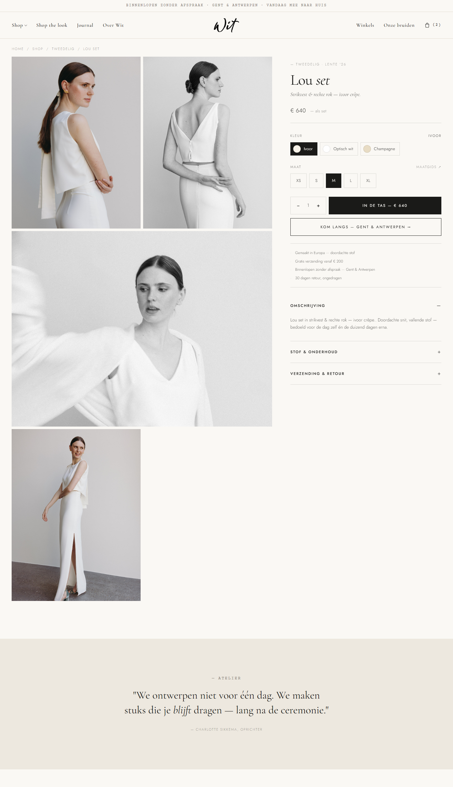
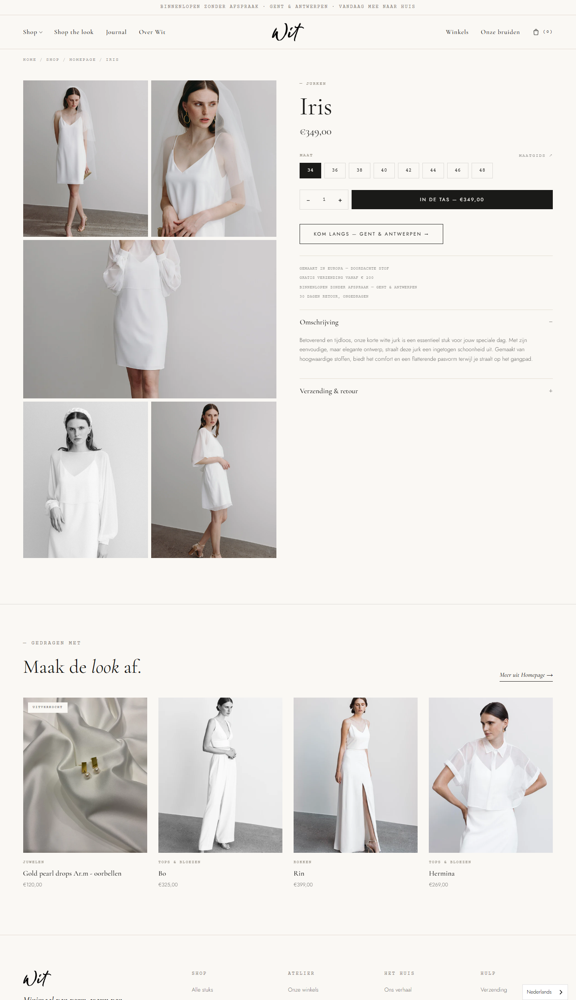
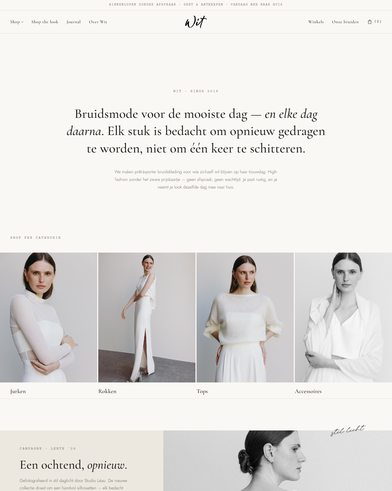
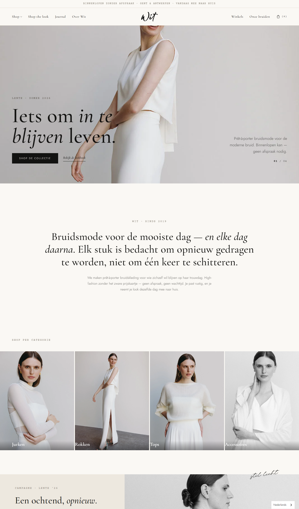
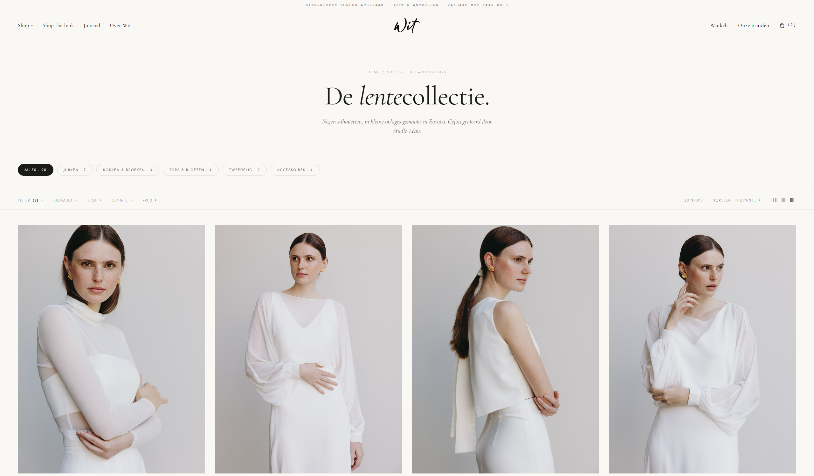
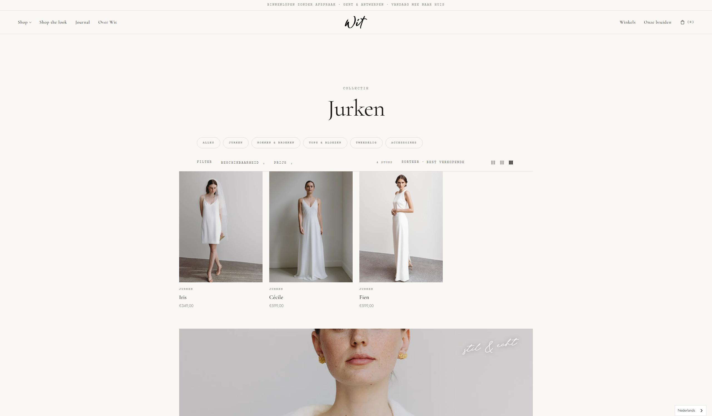
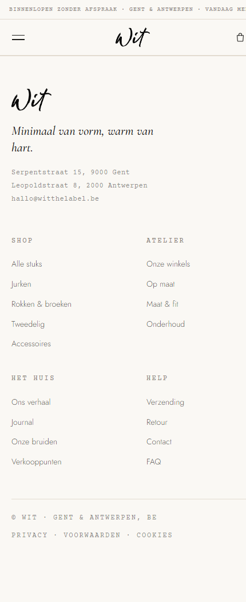
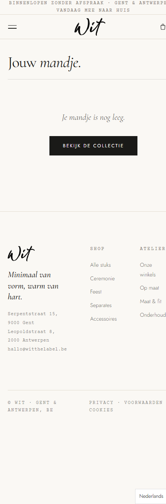
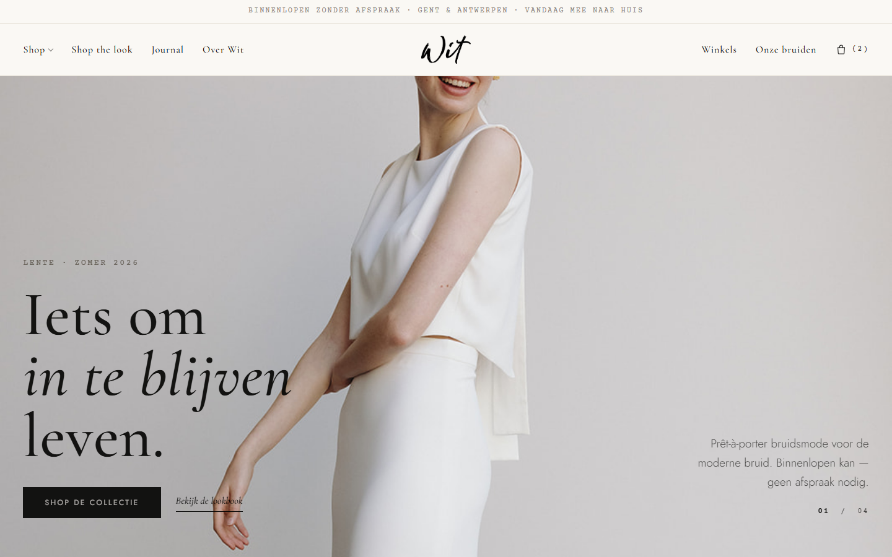
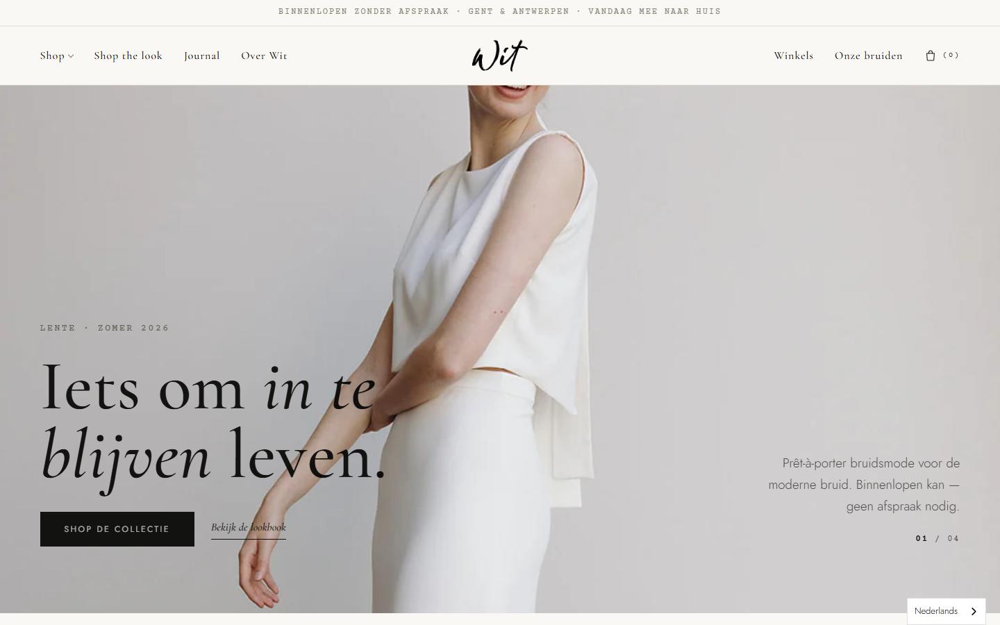

Geen content/configuratie-zaken — enkel echte styling-afwijkingen die in het thema gebakken zitten en visueel afwijken van het ontwerp bij dezelfde inhoud. Gevonden door de CSS van beide regel voor regel te vergelijken (10 componenten) en bevestigd met side-by-side renders op gelijke breedte.
De PDP is in het thema her-gestyled i.p.v. 1-op-1 overgenomen: serif/monospace waar het ontwerp sans gebruikt, een 50/50-kolom i.p.v. een vaste 480px koopkolom, en de kleurstalen ontbreken. Alles staat Open


| Element | Ontwerp | Thema v1.1 | Effect |
|---|---|---|---|
| Koopkolom Hoog | 1fr 480px (vast) | 1fr 1fr (50%) | Op breed scherm is de koopkolom veel te breed, galerij te smal. |
| Prijs Hoog | 18px Jost sans | 26px Cormorant serif | Compleet andere prijs-typografie en -grootte. |
| Accordeon-koppen Hoog | 12px hoofdletters sans | 18px serif, gewone case | "Omschrijving / Verzending…" zien er heel anders uit. |
| Tag · optielabels · optiepillen · perks Hoog | Jost sans | monospace (Courier) | Typmachine-letter door de hele infokolom i.p.v. sans. |
| Ondertitel Hoog | 17px cursief Cormorant | 15px sans, recht | Andere stem en kleiner. |
| Kleurstalen Hoog | rond kleurbolletje (.opt-color) | niet geïmplementeerd | Kleuren tonen als platte tekst-pillen i.p.v. swatches. |
| Uitverkochte maat Mid | doorgestreept + gedimd | geen pill-status | Niet-leverbare maat ziet er identiek uit aan een leverbare. |
| Titel-grootte Mid | max 48px | max 64px | Producttitel groeit veel groter op breed scherm. |
| Galerij-uitsnede Mid | 3:4 tegels, 4:3 breed beeld | 4:5 tegels, 16:10 breed | Zichtbaar andere bijsnijding/hoogte van de foto's. |
| Knoppen / qty Mid | 56px hoog; prijs-haarlijn; perk-bullets (·) | 48px; geen scheidingslijn; geen bullets | Lagere CTA + ontbrekende scheidingen/bullets. |
site/product.html terugzetten in sections/main-product.liquid (font-families, 480px-kolom, 56px-knoppen, .opt-color-swatch, .opt-pill.oos, galerij-ratio's, prijs-haarlijn + perk-bullets).Categorie-labels — het ontwerp zet het label donker, onder het beeld, met een haarlijntje (de spec zegt letterlijk "label below the image, not overlaid"); het thema legt het wit over het beeld op een donkere gradient. Hoog Open


| Element | Ontwerp | Thema v1.1 | Effect |
|---|---|---|---|
| Categorie-label Hoog | onder beeld, color:var(--ink), haarlijn eronder, baseline | position:absolute; bottom:0; color:#fff, donkere gradient | Witte tekst over de foto i.p.v. donkere tekst eronder met streepje. |
| Positie categorieën Mid | top-padding clamp(24px,3vw,48px) | var(--section-y) = 80–160px | Het categorieblok zit veel lager / losser van de sectie erboven. |
| Hero op mobiel Mid | 90vh | 64vh | Op telefoon is de hero een korte band i.p.v. bijna schermvullend. |
| Intro-blok Mid | max-width 1180px; ruimer; line-height 1.3 | 1100px; krapper padding; line-height 1.18 | Intro oogt smaller en compacter dan het luchtige ontwerp. |
.cat-label terug naar onder-het-beeld + donker + haarlijn; .categories top-padding naar de ontwerpswaarde; mobiele hero naar 90vh; intro-breedte/padding/line-height gelijktrekken.De full-bleed breedte en het strandende campagne-blok waren afwijkend maar zijn al opgelost in v1.2. De rest staat nog open.


| Element | Ontwerp | Thema v1.1 | Status / effect |
|---|---|---|---|
| Volle breedte Hoog | full-bleed | gecapt op 1400px | Opgelost v1.2. |
| Campagne strandt product Hoog | nette rijen van 4 | campagne na #3 → los stuk | Opgelost v1.2. |
| Filterbalk-font Hoog | Jost sans | monospace | Open — andere letter door de hele filterbalk. |
| Filterbalk sticky-offset Hoog | top:108px (onder header) | top:0 | Open — balk plakt achter/onder de header i.p.v. eronder. |
| Productrij-tussenruimte Hoog | row-gap ~40–64px | ~20–32px | Open — grid leest dichter/minder luchtig. |
| Tablet-kolommen (≤1024px) Hoog | 2 kolommen | 3 kolommen | Open — kaarten merkbaar smaller op tablet. |
| Chips + kop Mid | sans chips, 1 scrollende rij; geen "Collectie"-eyebrow; cursief-serif ondertitel | mono chips die wrappen; extra "Collectie"-eyebrow; bodytekst-ondertitel | Open — meerdere kleinere kop/chip-verschillen. |
top = headerhoogte, grid-gap en tablet-breakpoint (2-kol) gelijktrekken, "Collectie"-eyebrow weg, ondertitel als cursief serif. (Breedte + campagne zitten al in v1.2.)Het thema mist de responsieve footer-regels van het ontwerp, dus op telefoon blijven de 5 kolommen naast elkaar staan en lopen ze van het scherm. Hoog Open


site/styles.css (≤860px → 2 kolommen + brand full-width; bottom-rij stapelt) overnemen in wit-base.css.

Verder byte-identiek of triviaal anders: kleur-tokens (ivoor/inkt/steen), typografie-schaal (Cormorant/Jost/Courier, knoppen, links), header & navigatie (dropdown, mandje-icoon, logo), productkaart in het grid, en het winkelmandje. Hier is geen actie nodig.